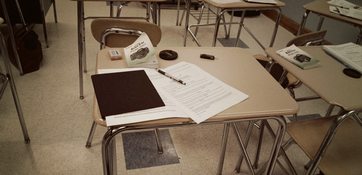

先週に引き続き、センター試験の話題です。
実はこの原稿を書いているのは1月17日。つまり、センター試験初日です。もう何年も高3生を教えていますが、この時期は毎年心が落ち着きません。センター試験はこれから始まる長い入試の始まりに過ぎません。しかし、特に国立大学を狙う生徒にとっては、場合によってはここで受験が終わってしまう可能性のある、非常に「重たい」入試なのです。
ただでさえ「重たい」センター試験ですが、今年はそれに輪をかけて理科のシステム変更や指導要領の変更が受験生の不安を助長しています。これまでの経験を使うことができない状況で、手探りの受験を戦わなければならないのですから、その心理的な負担はかなりのものです。
このような状況を考えると、現在議論されているセンター試験廃止案もそう悪くないのかな、と思ってしまいます。高校在学中に何度か試験を受けて、その成績を使って受験をする形にすれば、確かに一発勝負のプレッシャーは軽減することができます。じっくりと腰を据えて試験に臨めれば、本来の実力を発揮できる可能性は高くなり、結果として大学側も正確な成績を知ることができるかもしれません。
しかし、一方で一発試験の利点もあります。これまでどのような生活を送ってきたかに関係なく、この一回の試験で結果を出せたかどうかを問うことは、ある意味でとても解りやすく、社会人としての「リアル」でもあります。社会人になると、「過程」が考慮されることはほとんどなく、「結果」を出せたかどうかのみが問題になるのですから。
そう考えてみると、センター廃止の議論は究極的なところで、「大学入試の社会的な位置づけ」を問うものなのかもしれません。大学受験は純粋に生徒の学力を測るだけのものなのか、あるいは、社会の中での自分の位置、立場を定める「学歴システム」の最初の一歩なのか。これまでの大学入試は明らかに後者でした。善くも悪くも学歴によって将来がある程度定まるシステムでは、センターは一発試験でかまいません。しかし、大学を就職と切り離し、純粋な学問の場とするのであれば、一発試験はその趣旨にそぐわないでしょう。
第2次世界大戦以降、新学制のもとで現在のシステムは形成されてきましたが、時代は大きく変わっています。センター廃止議論を機に、学校システムと社会の関連性というより大きな問題、より根本的な問題を考えてみる必要があります。
センター初日を無事終えて塾にやってきた、普段より少し「ハイ」な生徒を横目に見ながらそんなことを考えました。